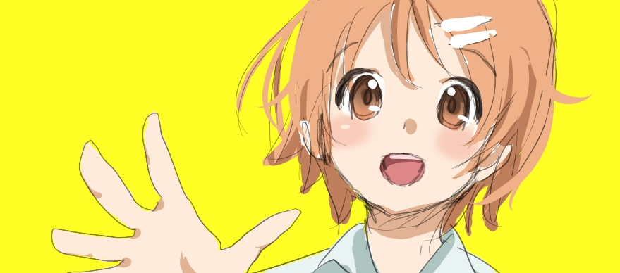

hisyotan 開発中
あなたのToDoを管理する Twitter BOTcommand
| [basic commands] | |||
| --hello-hisyotan | 友達になる | @hisyotan --hello-hisyotan | sample |
| うぃる (--add) | TODOをおぼえといてもらう | @hisyotan うんこ うぃる | sample |
| なう (--list) | 今あるTODOを教えてもらう | @hisyotan なう | sample |
| だん (--done) | TODOを片付けてもらう | @hisyotan うんこ だん | sample |
[advanced commands] | |||
| --help | とくになにも教えてくれない | @hisyotan --help | sample |
| --clear-all | TODOをぜんぶ片付けてもらう | @hisyotan --clear-all | sample |
| --daily | (鋭意開発中) | @hisyotan --daily 07:30 | sample |
| --byebye-hisyotan | 友達をやめる(´・ω・`) | @hisyotan --byebye-hisyotan | sample |
github
https://github.com/otiai10/hisyotan.py